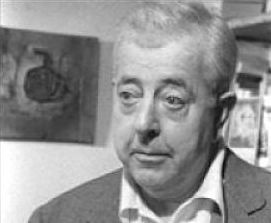

- 31 -

.Jacques Prévert [1900-1977]
Dù yêu hay ghét, sau 100 năm kể từ khi ông ra đời, tác giả của Paroles (Ngôn từ) vẫn là một phần của ký ức tập thể của nước Pháp - kỷ niệm ông có một cuốn sách tiểu sử đồ sộ của Yves Courrière, một triển lãm và một vở kịch nói lên tài năng nhiều mặt của ông mà hậu thế văn học đã quên ơn.
"Jacques Prévert [1900-1977], 30 tuổi. Viết bằng tiếng Pháp tồi cho những người Pháp tồi”. Đấy là ghi chú tiểu sử đáng buồn mà Prévert đã chọn để kèm theo việc xuất bản một trong những tập thơ đầu trong tạp chí Bifur khó tính của giới trí thức. Gần 30 năm sau khi ông mất, Yves Courrière đã cống hiến một cuốn tiểu sử đồ sộ dày 720 trang cho con người mà thông thường bị liệt vào địa vị một siêu sao của nghệ thuật giải trí. Trường hợp của Prévert thực là bí ẩn, mà quả tình vốn thế. Lớp hậu thế tò mò khi con người mở đầu của nghệ thuật “hoang tưởng xã hội”, một thi sĩ tiên phong lại không được những đồng nghiệp đương thời đón nhận, mà coi là loại dung tục tệ hại nhất, trẻ con nhất. Lại còn tò mò hơn khi nhà đạo diễn điện ảnh Truffaut nói rằng ông là “nhà viết kịch bản lớn duy nhất của Pháp” và sự tôn sùng tài năng điện ảnh dường như lại bị che phủ đi bởi cái vinh quang của thơ ca dân dã của ông. Nơi những nhà học thức tinh tế nhăn mũi.
Rời trường từ năm 14 tuổi và tự đào luyện “được chăng hay chớ” về văn học mỗi khi vớ được những sách vở cũ, ông trở thành một tên tuổi tại các trường cao đẳng với những bài thơ nhuốm màu siêu thực, huyền thoại và chất phản kháng, cộng với tình cảm dành cho lớp người nghèo khổ ở Paris, điều khiến cho ông tạo ra kỳ tích trong điện ảnh khi cộng tác với Marcel Carné. Chính vì thành công đó mà tập thơ Paroles mới được chào đời vào năm 1946 với sự miễn cưỡng của tác giả nhưng lại gây ra một tiếng vang bất ngờ. Ông nói: “Tôi không muốn xuất bản những bài thơ này. Tóm lại cái mà họ gọi là thơ”. Ông cũng chả lưu giữ những tác phẩm “ngòi nổ” làm ra từ những năm 30 cho Nhóm Kịch Tháng Mười. Ông chỉ giữ lại những mẩu thơ nhỏ tạo cảm hứng cho ông khi cộng tác với Renoir. Nghệ thuật ngôn từ của ông, lấy cảm hứng từ đường phố và phụng sự cho nó, đã được công chúng đón nhận, bất chấp những lời dè bỉu. Nó nói lên tiếng nói của nhân dân mà không phải là mô phỏng nó, mang lại chiều sâu và nét chân thực giống như những bộ phim mà ông làm chung với Carné mà đến nay ta càng thấy rõ. Vô cảm trước cái khẩu vị của chất hài hước Anh, các nhà phê bình chê bộ phim Drole de drame là “sự ngu ngốc của chủ đề” và lời đối thoại “quá nhiều chất thơ” đến mức các nhà phát hành quảng cáo rằng “Đừng có bỏ sót bộ phim ngu ngốc nhất trong năm”. Không khí nửa thực, nửa hư và thứ phương ngữ nên thơ của phim Cảnh sương mù cũng bị công kích như vậy, tuy rằng rất được công chúng tán thưởng. Quay trong chiến tranh, phim Những đứa trẻ của thiên đường tuyệt tác của cặp Carné-Prévert, là một thành công cuối cùng. Sau đó ông thôi làm phim và với ba gói Gaulois mỗi ngày, ông chúi đầu làm thơ cho đến khi cảm hứng tan theo khói thuốc.
Prévert từng nói: “Chừng nào cuộc sống hết trò, cái chết quay lại để thế chỗ”. Bị gạt ra khỏi Bách khoa toàn thư nhưng sách lại bán ra hàng triệu bản, bị giới “văn chương” nhạo báng nhưng được lớp trẻ yêu mến và được hát khắp thế giới với ca khúc Les feuilles mortes (Lá khô), cuối cùng Prévert đã trả thơ ca mang đậm dấu ấn mình về cho đường phố.
Prévert tạo ra tiếng cười, những kỷ niệm xúc động, cả sự đam mê và rất ít khi ông dửng dưng. Rốt cục, Prévert còn lại những gì? Các bà trích dẫn “những gia đình tốt đẹp” và phá lên cười. Người lớn thì thú vị với chất nổi loạn vô chính phủ, chống lại chủ nghĩa quân phiệt và giới giáo sĩ. Còn với lớp trẻ em, là hình ảnh những đứa bé khốn khổ kiểu Victor Hugo. Nhưng bao giờ Prévert cũng làm người ta mơ mộng. Ông chính là một chú Gavroche của những ý tưởng, cứ tiếp tục hát lên và không hề co vòi lại trước những tràng súng liên thanh.
Trở lại với “chiếc lá khô” ca khúc nổi tiếng qua giọng hát của Yves Montand, cô gái nào là nguồn cảm hứng của ông? Người ta cố khỏa lấp chuyện này để tránh phiền lụy đến con cái. Nhưng sau khi ông qua đời, người ta đã đào bới lại bởi sức sống của ca khúc bất hủ. Đối tượng của bài thơ kia chính là người đã bầu bạn với Prévert từ trước chiến tranh và cả trong thời nước Pháp bị tạm chiến. Chẳng ai nói đến 6 năm trời họ yêu nhau đến điên đảo mà bằng chứng là khoảng chục lá thư và bức vẽ của ông. Đấy là những năm ông gặt hái được nhiều trong “mùa màng” của sự nghiệp, từ Drole de drame đến Enfants du paradis, từ Barbara đến Les feuilles mortes. Họ đã sống, đã yêu nhau, đã ăn nằm với nhau!
Prévert gặp Claudy Carter khi cô 16 tuổi còn ông đã 38 tuổi. Người ta bảo cô ấy xinh đẹp. Lúc này ông sống với Jacqueline Laurent. Vì tuổi đời xa cách, ông “kính nhi viễn chi” cô gái trẻ này một thời gian, mặc dù gặp nhau và luôn đi cùng với nhau. Đến khi không cưỡng lại được tình cảm, Prévert thường gọi cô bằng mật danh “Petite Feuille” (Chiếc lá nhỏ). Prévert đã từng viết: “Những chàng trai thì đau đầu, các cô gái thì đau bụng, chính vì thế mà có chiến tranh và cuộc sống không phải bao giờ cũng là hội hè”. Sau đó hai người xa nhau, Claudy sống chung với Constant, nhưng Prévert bao giờ cũng tận tâm với cô. Họ trở thành bạn bè và ông có mặt trong những thời khắc quan trọng của đời cô: Khi ở bệnh viện, khi sinh nở. Claudy không hiểu nổi tại sao con cái ông lại phải xóa mình ra khỏi cuộc đời ông. Với Prévert, Claudy bao giờ cũng là một cô gái thanh tân, thơ mộng và đỏm dáng: Cô cấm ông không được nói ra tuổi của mình! Les feuilles mortes là khúc tình ca bi thiết đã đi sâu vào lòng người nhiều thế hệ.
 .
.